Szigetek
12 terület. A térképek a játékbeli térképpel azonosak (M billentyű). A sötét barlang a vulkán alatt van.
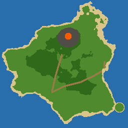
Karamja
Trópusi sziget faluval, dzsungellel, banánültetvénnyel és a füstölgő vulkánnal. A falu mólójáról indul a hajó.
Megközelítés: A kezdő sziget. Itt ébredsz a falu mólójánál.
NPC-k: Luthas, Halász Zoli, Ültetvényes Dodo, Kapitány Tobias, Kovács Baku, Kereskedő Mira, Timi, Sámán Oba
Szörnyek: Lávaszellem (boss) (18), Dzsungelpók (4), Dzsungelkígyó (5), Skorpió (7)
Fák, növények, ércek: Pálmafa, Dzsungelfa, Kőszikla, Aranyérc, Esszenciakő, Tölgy, Fűzfa, Bogyóbokor, Gombák, Zsálya
Küldetések innen: Banánszállítmány, A kovács inasa, Zoli nagy fogása, A kapitány kardja, Kagylógyűjtés, Hajójegy Port Sarimba, A mélység királya, Luthas tűzifája, Timi kiskutyája, Mira szállítmánya, Lávagyík-vadászat, A hét sziget hőse, Gólemszív, Vérpók-selyem, A vulkán szíve
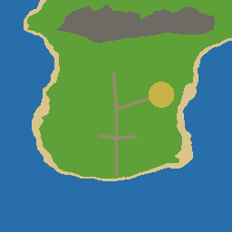
Port Sarim
Kikötőváros kocsmával, bolttal, börtönnel és farmmal. Itt van Kuno, a vadászmester és Betty mágusboltja.
Megközelítés: Hajóval Karamjáról (30 érme), a „Hajójegy Port Sarimba” küldetés után. Saját hajóval ingyen.
NPC-k: Kocsmáros Zsófi, Vadászmester Kuno, Kalóz Barnabás, Betty, Börtönőr Gábor, Rab Miklós, Gazda Feri
Szörnyek: Mocsári béka (6), Csirke (1), Óriáspatkány (2), Goblin (5)
Fák, növények, ércek: Dzsungelfa, Kőszikla, Aranyérc, Tölgy, Nyírfa, Fűzfa, Káposztaföld, Hagymaföld, Bogyóbokor, Len
Küldetések innen: Patkányok a börtönben, Betty bájitala, Tojásvadászat, A kalóz kincse, A Rusty Anchor vacsorája, Betty tűzrúnái, A börtönőr kulcsa, Zsófi tonhala, A vadászmester próbája, Kígyóméreg
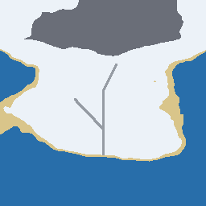
Zúzmara-fok
Havas, fenyves sziget törpefaluval, bányával és jégóriásokkal a hegyekben.
Megközelítés: Hajóval Port Sarimból (50 érme).
NPC-k: Törpe Dorin, Vadász Ilka, Remete Bence
Szörnyek: Hegyi troll (30), Hófarkas (8), Jégóriás (boss) (25)
Fák, növények, ércek: Fenyő, Kőszikla, Aranyérc, Jégkristály-ér, Esszenciakő, Nyírfa, Juharfa, Gombák
Küldetések innen: A törpe kristálya, Farkasok a hóban, Az éhező remete, A Jégóriás, Dorin sisakja, Bence tüze
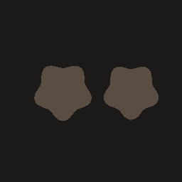
Barlang
Sötét barlangrendszer a vulkán alatt: lávagyíkok, barlangi pókok, a Vulkánkirály.
Megközelítés: A karamjai vulkán lábánál lévő barlangbejáraton át („A vulkán szíve” küldetés).
NPC-k: –
Szörnyek: Barlangi pók (12), Lávagyík (18), Vulkánkirály (boss) (40)
Fák, növények, ércek: Kőszikla, Aranyérc
Küldetések innen: –
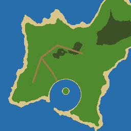
Koponya-öböl
Kalózsziget Csontvárossal, öböllel, roncsokkal és a kalózkapitány szellemével.
Megközelítés: Hajóval (40 érme).
NPC-k: Kocsmáros Rozi, Egyszemű Jack, Varázsló Zara, Térképész Miki
Szörnyek: Kalóz (15), Óriásrák (20), Kalózkapitány Szakáll (boss) (45)
Fák, növények, ércek: Pálmafa, Dzsungelfa, Kőszikla, Aranyérc, Halott fa, Tölgy, Bogyóbokor
Küldetések innen: Rozi rumja, Zara elveszett könyve, A varázsló tanítványa
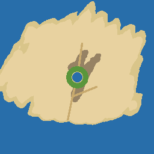
Homokfok
Sivatagi sziget oázissal, Szafir bazárral és piramissal. A hőség ellen vizestömlő kell.
Megközelítés: Hajóval (60 érme).
NPC-k: Bazáros Ali, Sejk Omar, Régész Nóra, Vízhordó Zoé
Szörnyek: Óriáshangya (11), Sakál (10), Múmia (22)
Fák, növények, ércek: Pálmafa, Kőszikla, Aranyérc, Baobab, Zsálya
Küldetések innen: Ali karavánja, Nóra ásatása, Az oázis vize, Ősi tekercsek, A fáraó átka
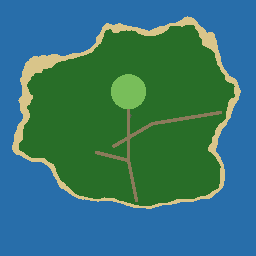
Tündeerdő
Tündeerdő óriásfákkal, Tündefalvával (itt építhetsz házat) és a Szent ligettel.
Megközelítés: Hajóval (70 érme).
NPC-k: Tündeúrnő Elenwe, Erdész Faelar, Bárd Lúthien
Szörnyek: Árnyfarkas (28), Erdei pók (16), Erdőőrző (boss) (55)
Fák, növények, ércek: Óriásfa, Dzsungelfa, Gyógyfű, Tiszafa, Juharfa, Levendula, Mandragóra, Gombák
Küldetések innen: Lúthien lantja, Faelar vadászata, A szent liget árnyai, Az erdész füvei, Az Erdőőrző haragja
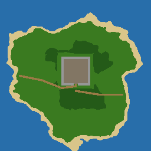
Dzsungelvár
Dzsungelsziget, közepén fennsíkon álló kővár. A várudvaron az erősebb, Vadászathoz kötött szörnyek és az aréna.
Megközelítés: Karamjáról gyalog, a keleti ösvényen.
NPC-k: Porondmester Brakk, Krónikás Vince
Szörnyek: Vadkan (9), Majomharcos (16), Óriásdenevér (14), Mérgeskígyó (20), Dzsungeltroll (26), Vérpók (32), Kőgólem (40), Árnylovag (50), Várúr Morlak (boss) (68)
Fák, növények, ércek: Dzsungelfa, Halott fa, Gombák, Zsálya
Küldetések innen: A vár krónikája, Trollfog, Az árnypecsét, A várúr koronája
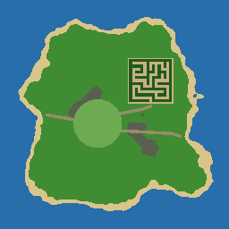
Gnómváros
A gnómok óriásfa-városa és a sövénylabirintus.
Megközelítés: A Tündeerdőből gyalog, a keleti ösvényen.
NPC-k: Gnóm király Bolgrim, Gnóm csapos Fimli, Pályaőr Gnorli
Szörnyek: Ogre (38), Kobold (13)
Fák, növények, ércek: Tölgy, Tiszafa, Juharfa, Mágikus fa, Bogyóbokor, Gombák, Levendula, Mandragóra, Len, Óriásfa
Küldetések innen: A sövénylabirintus, Ogrék az erdőben, A gnómkoktél titka
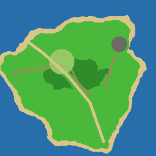
Smaragd-völgy
Buja zöld völgy folyóval, druidafaluval, virágos réttel és a sárkányodúval.
Megközelítés: Gnómvárosból gyalog, a keleti ösvényen.
NPC-k: Druida Morwen, Erdész Botond, Méhész Juli, Pásztor Áron, Sárkányvadász Réka
Szörnyek: Nyúl (1), Szarvas (3), Vadméh-raj (8), Erdei bandita (22), Unikornis (20), Medve (25), Mohaóriás (42), Zöld sárkány (boss) (62)
Fák, növények, ércek: Tölgy, Juharfa, Fűzfa, Tiszafa, Dzsungelfa, Bogyóbokor, Gombák, Zsálya, Levendula, Mandragóra, Len, Gyógyfű
Küldetések innen: A kőkör éneke, Mohaóriások, Medvebőr, Erdei banditák, Méz a kaptárból, Gyapjú a vásárra, A zöld sárkány
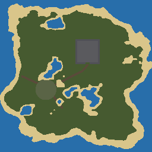
Holtláp
Ködös mocsár temetővel, Lápfalvával és a vámpírkastéllyal.
Megközelítés: A Dzsungelvárból gyalog, a keleti ösvényen.
NPC-k: Sírásó Teodor, Pap Mihály, Boszorkány Ilona, Paraszt Gyuri, Vámpírvadász Dezső
Szörnyek: Óriáspióca (12), Mocsári varangy (10), Zombi (18), Kísértet (24), Csontvázharcos (28), Ghoul (32), Lidércfény (36), Vérfarkas (45), Vámpír úr Drakmor (boss) (72)
Fák, növények, ércek: Halott fa, Tiszafa, Fűzfa, Gombák, Mandragóra, Levendula
Küldetések innen: Nyughatatlan holtak, Szenteltvíz, Kísértetjárás, Varangyláb, A vérfarkas, A vámpír úr
Felhőfok
Lebegő szigetek a felhők fölött, felhőhidakkal összekötve. Égi templom, Griffszirt, Viharcsúcs.
Megközelítés: Gnómvárosból a gnóm léghajóval (ingyen).
NPC-k: Égi őr Aelith, Léghajós Pimli, Szélmágus Orin
Szörnyek: Felhőnyúl (2), Égi kos (20), Ködmanó (15), Szélszellem (26), Hárpia (34), Felhőelementál (38), Griff (42), Viharsárkány (52), Viharkígyó Zephyra (boss) (76)
Fák, növények, ércek: Juharfa, Tölgy, Mágikus fa, Halott fa, Tiszafa, Bogyóbokor, Levendula, Mandragóra, Gyógyfű
Küldetések innen: Hárpiatollak, A Griffszirt ura, Zephyra haragja, A villám tudománya, Felhőkenyér